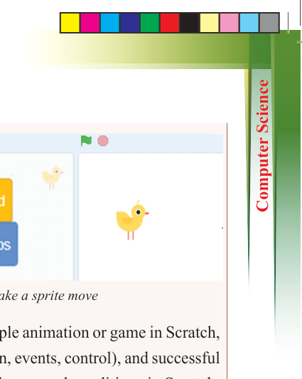
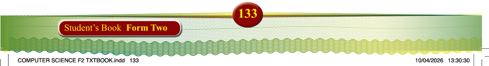
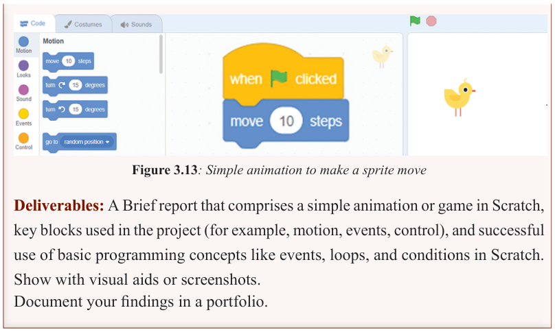
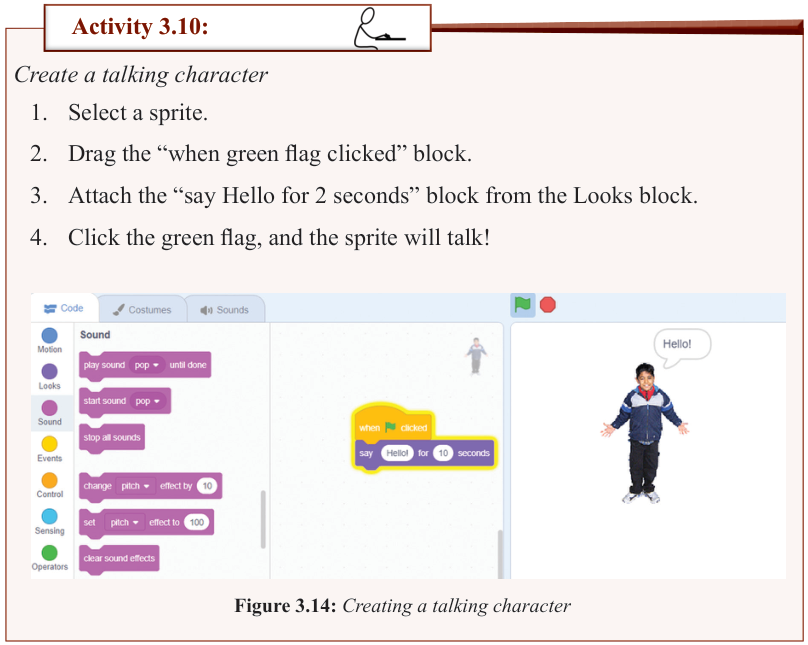

Figure 3.13: Simple animation to make a sprite move
Deliverables: A Brief report that comprises a simple animation or game in Scratch,
key blocks used in the project (for example, motion, events, control), and successful
use of basic programming concepts like events, loops, and conditions in Scratch.
Show with visual aids or screenshots.
Document your findings in a portfolio.

Activity 3.10:
Create a talking character
1. Select a sprite.
2. Drag the “when green flag clicked” block.
3. Attach the “say Hello for 2 seconds” block from the Looks block.
4. Click the green flag, and the sprite will talk!
Figure 3.14: Creating a talking character